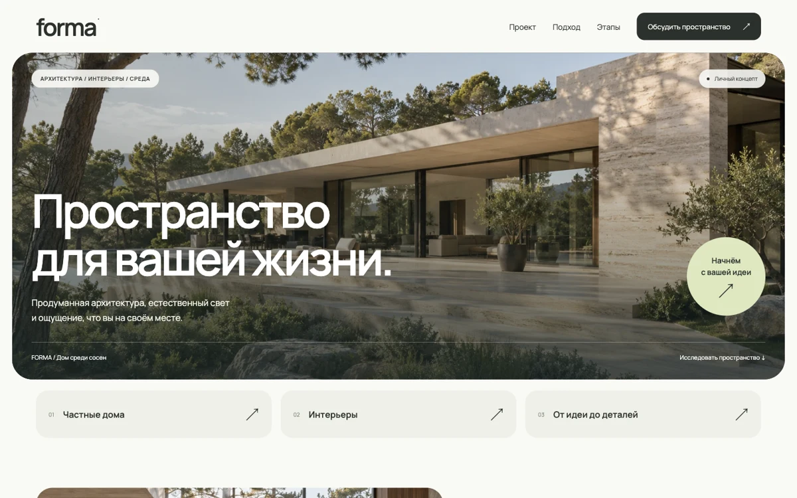
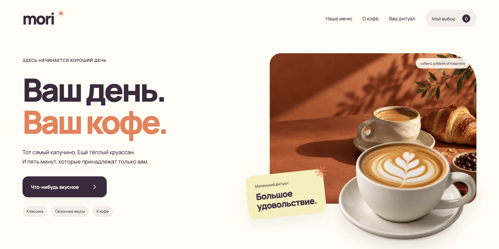
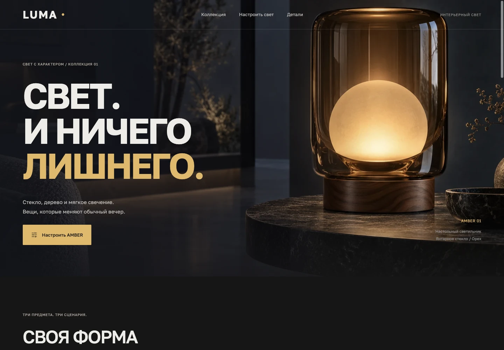

FORMA
Архитектурное бюро. Пространство, материалы, свет. Раскрытие проекта и интерактивный бриф.
Открыть сайт ↗Самостоятельные концепт-проекты. Исследую, как через типографику, движение и взаимодействия передать атмосферу бренда.
Личное портфолио ↗
Архитектурное бюро. Пространство, материалы, свет. Раскрытие проекта и интерактивный бриф.
Открыть сайт ↗
Кофейня. Тёплая редакционная подача, фильтрация меню, сбор напитка и выбор способа приготовления.
Открыть сайт ↗
Интерьерный свет. Коллекция, настройка яркости и температуры, сохранение параметров.
Открыть сайт ↗Бренды, товары и архитектурный объект вымышлены. Это личные работы, а не проекты для заказчиков. Формы работают локально, данные не отправляются. Изображения созданы для концептов.